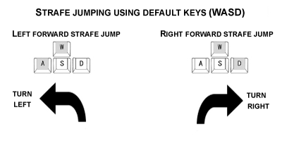
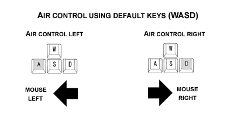

HL2DM 202 - Advanced Movement

Introduction
Advanced movement (aka bunnyhopping) allows you to move faster and conserve sprint while doing so. This provides several obvious benefits, such as being able to reach critical pickups and control points before your opponent, being more difficult to hit, and being able to rapidly escape a bad situation.
To help you learn to move in an advanced manner, the movements will be broken down into fundamental steps which can then be integrated into your overall technique.
Monitoring Your Speed
In order to get feedback on how you are doing, it is useful to check your velocity. To do this, open your console and enter the following cvar:
cl_showpos 1
This will display some statistics in the top right of your screen. The last one called "vel" shows your velocity. If you wish to switch these stats off you may enter:
cl_showpos 0
To get a feel for velocity, try walking forward. You should see the maximum walking speed is 190. Next, try sprinting forward. You should max out at 320. While learning advanced movement, it is recommended you keep these stats
enabled for feedback on the velocity you are reaching and the average velocity you are able to maintain. Advanced movement techniques offer the potential to reach maximum speeds above 500, and to consistently maintain speeds above
400.
Sprint Jumping
Keystrokes: forward+sprint~jump~duck
The first step to learning advanced movement is sprint jumping. To sprint jump, press forward and sprint together then press jump, followed closely by duck. This style of jumping should increase the distance you can jump. If you find this difficult, you may wish to reconfigure your keys until you can do this comfortably.
Tuck Jumping
Keystrokes: forward+sprint~jump~hold duck
Tuck jumping is a term that is not from the HL2DM community, but has been coined here to help distinguish this important aspect of advanced movement. Once you are comfortable with sprint jumping, you should practise this movement until it is easy for you.
Tuck jumping refers to "tucking your legs up" throughout the jumping motion. This is performed by holding down duck. By keeping your feet up, you are able to jump over various things without getting stuck on them, are a smaller target, and will have better control in the air.
To practise tuck jumping, sprint jump forward and release every key except duck. Continue holding duck throughout the jump and make sure you land ducked. Once you are in the air, it is important that the only key you are holding is duck. It may take some time to adjust, as most players who are learning advanced movement for the first time will have a hard time conditioning themself to release the forward key. When you land ducked, the friction from the ground should slow you to a stop. Once you come to a complete stop, stand up and repeat the move.
Drill 201.1 - The Lockdown Rail Jump
To test if you have tuck jumping mastered, load up dm_lockdown and go to where the crossbow is. Here you will see two low rails wrapping around the walkway. Go to the side opposite the crossbow and through the entrance to this
area so you have a run up. Practise jumping over the two rails to the side where the crossbow and the doorway to the supercharger is. In order to clear both rails you will need to sprint jump forward and keep your feet up so they
do not catch on either rail. To form good habits for the remainder of the course, do not release duck until you have come to a complete stop.
Strafe Jumping
Keystrokes: forward+strafe+sprint~jump~hold duck
Now that you know how to sprint jump and what to do once you are in the air, it is time to learn how to increase your takeoff speed significantly. Strafe jumping in HL2DM uses the the fact that your velocity increases as you turn in order to obtain higher speeds as you move in the desired direction. Of all the things in advanced movement, strafe jumping is probably the hardest to learn.
To strafe jump, you will need to add two things to your basic sprint jump (which you should now be doing as a tuck jump). The first is either the left strafe or the right strafe key, depending on which direction you wish to strafe in, and the second is whipping your mouse in the same direction.
First, lets get used to adding in a strafe key. To do this, simply perform your jump, but instead of just pressing forward to leap in a straight line, press forward and left strafe simultaneously to sprint jump diagonally to the left. Don't forget to keep your legs tucked up and land ducked. Now press forward and right strafe to jump diagonally to the right. Practise zig-zagging your way around using these moves. Once you are comfortable with the movement, it is time to add mouse movement to the mix.
Mouse control is the "art" aspect of advanced movement. Each player has a slightly different style of sweeping with the mouse to achieve maximum speed and control. To perform the basic movement, do the jump you have been practising, but sweep the mouse in an arc as you strafe in that direction. This is the part of advanced movement that is difficult to describe in words.

To learn how to move the mouse well:
1. Watch frag and tutorial videos of other players and observe how they move.
2. Make the movement in a smooth single sweep of the mouse.
3. Increase the length of the arc by pulling back slightly in the opposite direction first.
4. Observe your velocity and note when you accelerate above 400.
Drill 201.2 - The Lockdown Leap
This is the acid test for how well you can strafejump. Load up dm_lockdown and practise jumping from the walkway with the broken rail, through the window into the charger room and back.
Drill 201.3 - Ptrain
Load up ptrain. This is a map made for practising strafe jumping. It has 15 progressively harder jumps, ranging from extremely easy at level 1 to practically impossible at level 15. Make sure all server settings are stock, or you
will not have an accurate measure of your progress. You are strafe jumping at a high level when you reach the double digit levels.
Drill 201.4 - Respawn Strafe Jumping
Bind a key to the command kill. For example, in console:
bind F8 "kill"
To get used to strafe jumping off your spawn point, hit the key to suicide and as soon as you respawn, strafe jump away from your spawn point. Repeat this drill until it becomes a habit.
Overbouncing
Overbouncing (aka asshopping or speed skating) is used to maintain momentum as you move around, without using up valuable aux (sprint). Overbouncing is performed by timing your jumps while holding duck to minimize friction caused by being in contact with the ground. The effect of this is that you continue to "skate forward" without having to sprint or strafe jump again. This is most useful for moving rapidly around a map while gathering, without wasting aux. It is also much quieter than regular movement.
To get used to overbouncing, simply jump forward and hold duck as before, but instead of landing ducked and coming to a halt, press jump the instant you come into contact with the ground. If you time it just right, you skip forward without having to do a second jump. To get this just right, timing is everything. If you are too late, you will make full contact with the ground and come to a grinding halt. While learning this movement it is best to jump slightly early rather than slightly late. If you are stopping completely, try hitting jump just prior to making contact with the ground. Also make sure you are "tuck jumping" correctly, releasing all other keys and just holding duck as you perform the overbounce. Once you experience overbouncing for the first time, try to replicate it over and over until you get a feeling for the correct timing.
As soon as you can perform a single overbounce somewhat consistently, try doing multiple jumps. With perfect timing you can overbounce multiple times off a single jump.
Air Control
In addition to moving well on the ground, advanced movement also involves moving well in the air. Air control is critical because it allows you to maximize momentum, control your direction while overbouncing, and evade fire in the air.
The first thing to keep in mind is that it is a good habit to hold down duck any time your feet are off the ground. This makes you a smaller target, prepares you to overbounce upon landing, and allows you to clear or bounce off objects as you pass over them. Second, the only things you use to perform air control are your mouse and strafe keys. Make sure you are not holding the forward or back key while in the air.
To control your movement in the air, press a strafe key and then turn your mouse in the same direction. This should turn you sharply in that direction.
To get used to air control, find a map with a bouncer or a lift you can leap off, or a height you can fall from, then practise turning left and right while in the air. Once you are used to controlling yourself in the air and where you land, it is time to integrate air control into your movement.
Air control is the final ingredient you need to have precise control over your movement. As soon as you jump and hold duck, you should apply air control prior to hitting the ground and overbouncing. If you want to go in a straight line, you should turn slightly in the air in the opposite direction from which you initiated the jump. For example, if you initiate a left strafe jump using W+A, once you are in the air, use right air control (D + Mouse Right) to straighten out. When you overbounce, switch directions and apply air control in the opposite direction on each bounce. This turning motion will allow you to control where you want to go and also assists in maintaining your momentum in the air. If you are in combat you might also use it to turn sharply and evade a shot.
To turn a corner while overbouncing, simply apply air control in the direction you want to turn on each bounce. For example, to make a right turn, apply right air control (D + Mouse Right) on each overbounce until you have completed the turn.
Drill 201.5 - Low Gravity Air Control
To really exaggerate air control, create a server and set gravity extremely low. In console:
sv_cheats 1
sv_gravity 50
Now practise jumping up in the air and moving left and right using air control. This will give you an exaggerated feel for how to control your movement in the air. Once it is easy to control yourself, increase the gravity in increments
of 50 until you get back to stock gravity 600.
Integrating Advanced Movement
Integration means being able to blend strafe jumping, overbouncing, and air control in a manner that allows you complete control over your movement. It can take several months to get good at advanced movement. To develop quickly, you should start trying to integrate these skills into your game as soon as possible. This may make you play worse for a while, but it will be worth it in the long run.
It will also take time to learn how to use your weapons while moving at higher speeds. Your aim may suffer for a while as you adjust to this faster style of play. The benefit of shooting while moving at higher speeds, and shooting at other advanced players, is that it will force you to to develop much stronger aim. Once you play this way for a while, you will begin to surpass the majority of players who do not know advanced movement.
Drill 201.6 - Lost Village Circuit
Load up dm_lostvillage. Create a circuit around the perimeter of the map starting and ending at the AR by the tank. Practise bunnyhopping around the circuit without stopping. Concentrate on integrating all of the skills described
in this course to achieve maximum speed and control.